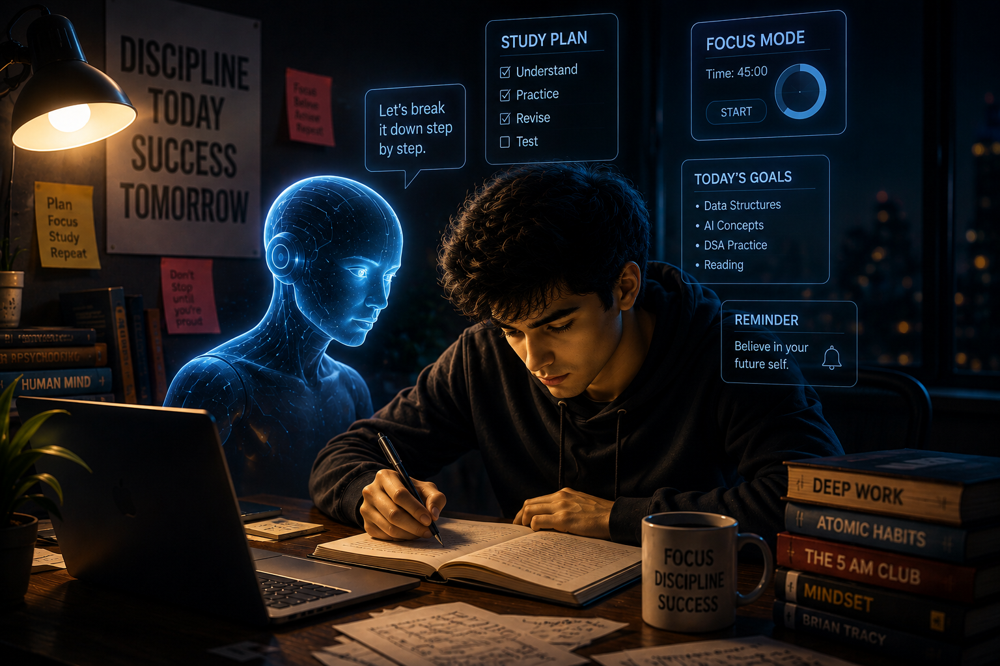

Introduction
These days,AI is helping students study smarter by improving time management, note-taking, coding assistance, and personalized learning… and many more.But important thing to manage and think about how we are going to use the technologies. Because Ai has both positive and negative impacts.
Artificial Intelligence is becoming an essential part of modern education by helping students learn more efficiently. From organizing daily schedules to providing instant explanations for difficult concepts, AI tools are changing the way students approach their studies. They also encourage self-paced learning, allowing students to improve at their own speed. With the right balance of technology and human effort, AI can boost productivity while reducing stress. As these tools continue to evolve, they are shaping a smarter and more personalized learning experience for students worldwide.

Main Content
Artificial Intelligence is helping students become more productive by simplifying learning, improving focus, and providing personalized guidance. AI-powered tools can explain complex concepts, generate summaries, assist in coding, and help students manage their study schedules efficiently.
Benefits of AI for Students
- Personalized learning experience
- Faster research and information gathering
- Improved time management
- Better coding assistance and debugging
- Enhanced creativity and problem-solving
Artificial Intelligence is also transforming collaboration among students. AI-powered platforms make it easier to work on group projects by organizing tasks, sharing resources, and tracking progress in real time. Smart writing assistants help improve grammar, sentence structure, and overall writing quality, making reports and presentations more professional. Students preparing for competitive exams can benefit from adaptive mock tests that analyze performance and recommend topics for improvement. AI also enhances accessibility by offering speech-to-text, text-to-speech, and real-time translation features, ensuring that education becomes more inclusive for learners with different needs. Beyond academics, AI encourages students to develop digital skills that are highly valued in today's job market. Understanding how to use AI effectively prepares students for future careers where technology plays a central role. While AI is a powerful learning companion, it should always be used as a tool to support learning rather than replace genuine effort, curiosity, and independent thinking.
Artificial Intelligence is not only helping students in classrooms but also preparing them for the future workplace. Many industries now expect employees to understand and use AI-powered tools for research, communication, and problem-solving. By learning how to work with AI during their academic journey, students develop practical skills that increase their confidence and employability. AI can recommend learning resources based on individual interests, making education more engaging and personalized. It also helps teachers identify students who need additional support by analyzing learning patterns and performance data. Interactive AI tutors provide step-by-step explanations instead of simply giving answers, encouraging students to understand concepts deeply. Furthermore, AI-powered simulations allow learners to practice real-world scenarios in fields such as medicine, engineering, finance, and computer science. These experiences make education more practical and application-oriented. Students can also improve their communication skills through AI-based language assistants and presentation coaches. With continuous advancements in technology, AI is expected to become an even more valuable learning companion in the coming years. However, ethical use of AI remains equally important. Students should always verify information, avoid plagiarism, and use AI as a tool for learning rather than a shortcut for completing assignments. Responsible use of Artificial Intelligence, combined with dedication and creativity, can help students achieve academic excellence while preparing them for successful careers in the digital era.
Conclusion
Artificial Intelligence is not replacing students; it is empowering them. When used responsibly, AI can improve learning, save valuable time, and help students achieve their academic and professional goals more effectively.